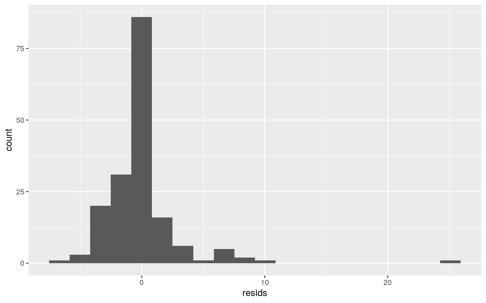

#loading libraries and importing datasets
country <- read.csv("Country Data.csv")
sustainability <- read.csv("Sustainability Stats.csv")
population <- read.csv("Population.csv")
library(dplyr)
#joining datasets
data <- inner_join(country, sustainability, by = "Country.Name")
data <- inner_join(data, population, by = "Country.Name")
#removing and renaming columns
colnames(data)## [1] "Time.x"
## [2] "Time.Code.x"
## [3] "Country.Name"
## [4] "Country.Code.x"
## [5] "GDP..current.US....NY.GDP.MKTP.CD."
## [6]
"Death.rate..crude..per.1.000.people...SP.DYN.CDRT.IN."
## [7]
"Adolescent.fertility.rate..births.per.1.000.women.ages.15.19...SP.ADO.TFRT."
## [8]
"Age.dependency.ratio....of.working.age.population...SP.POP.DPND."
## [9] "Time.y"
## [10] "Time.Code.y"
## [11] "Country.Code.y"
## [12]
"CO2.emissions..metric.tons.per.capita...EN.ATM.CO2E.PC."
## [13] "Forest.area....of.land.area...AG.LND.FRST.ZS."
## [14]
"Renewable.energy.consumption....of.total.final.energy.consumption...EG.FEC.RNEW.ZS."
## [15]
"People.using.at.least.basic.drinking.water.services....of.population...SH.H2O.BASW.ZS."
## [16] "Year"
## [17] "Year.Code"
## [18] "Country.Code"
## [19] "Population..total..SP.POP.TOTL."data <- data %>% select(-Time.x, -Time.Code.x, -Time.y, -Time.Code.y, -Country.Code.x, -Country.Code.y, -Year, -Year.Code, -Country.Code)
data <- data %>% rename(Country_Name = Country.Name, GDP = GDP..current.US....NY.GDP.MKTP.CD., Death_rate = Death.rate..crude..per.1.000.people...SP.DYN.CDRT.IN., Age_dependency_ratio = Age.dependency.ratio....of.working.age.population...SP.POP.DPND., Adolescent_fertility_rate = Adolescent.fertility.rate..births.per.1.000.women.ages.15.19...SP.ADO.TFRT., CO2_emissions_per_capita = CO2.emissions..metric.tons.per.capita...EN.ATM.CO2E.PC., Forest_area = Forest.area....of.land.area...AG.LND.FRST.ZS., Drinking_services = People.using.at.least.basic.drinking.water.services....of.population...SH.H2O.BASW.ZS., Renewable_energy_consumption = Renewable.energy.consumption....of.total.final.energy.consumption...EG.FEC.RNEW.ZS., Population = Population..total..SP.POP.TOTL.)
#omitting NA values
data <- data %>% na.omit()
#making new numeric variable
data <- data %>% mutate(GDP_per_capita = GDP/Population)
#making new categorical variable based on World Bank classifications
data <- data %>% mutate(Income_Level = case_when(GDP_per_capita > 12535 ~ "high", GDP_per_capita <= 12535 & 4045 <= GDP_per_capita ~ "upper-middle", GDP_per_capita <= 4045 & 1035 <= GDP_per_capita ~ "lower-middle", GDP_per_capita <= 1035 ~ "low"))
#reorder income level
data$Income_Level <- factor(data$Income_Level, levels = c("low", "lower-middle", "upper-middle", "high"))
#reordering variables in dataset
data <- data %>% select(Country_Name, GDP, GDP_per_capita, Income_Level, CO2_emissions_per_capita, Population, everything())I found three datasets through the World Bank Databank, found here: https://databank.worldbank.org/home.aspx. Datasets can be filtered based on countries, statistics, and years. I chose statistics from Gender Statistics, Poverty Statistics, and Sustainable Development Goals, using the year 2015 as the base year for all three datasets. The Gender Statistics dataset contained these variables: GDP, Death rate, Adolescent fertility rate, and Age dependency ratio. The Poverty Statistics dataset contains the Population statistic, and the Sustainability Development Goals dataset contains CO2 emissions per capita, Forest area, Renewable resource consumption, and Access to drinking water services. I'm particularly interested in how a country's income level (based on GDP) impacts societal issues such as access to drinking water and adolescent fertility rate, as well as sustainability variables such as CO2 emissions and forest cover. I expect higher GDP to correlate to a higher standard of living (lower death rate, lower adolescent fertility rate, lower age dependency ratio, more access to drinking water services) and worse sustainability initiatives (such as higher CO2, less forest cover, but higher renewable resource consumption). There are 173 observations for every variable.
#run overall MANOVA
manova <- manova(cbind(GDP_per_capita, Death_rate, CO2_emissions_per_capita)~Income_Level, data=data)
summary(manova)## Df Pillai approx F num Df den Df Pr(>F)
## Income_Level 3 0.80892 20.797 9 507 < 2.2e-16 ***
## Residuals 169
## ---
## Signif. codes: 0 '***' 0.001 '**' 0.01 '*' 0.05 '.' 0.1
' ' 1#follow up ANOVA tests
summary.aov(manova)## Response GDP_per_capita :
## Df Sum Sq Mean Sq F value Pr(>F)
## Income_Level 3 2.9611e+10 9870435132 91.182 < 2.2e-16
***
## Residuals 169 1.8294e+10 108250008
## ---
## Signif. codes: 0 '***' 0.001 '**' 0.01 '*' 0.05 '.' 0.1
' ' 1
##
## Response Death_rate :
## Df Sum Sq Mean Sq F value Pr(>F)
## Income_Level 3 81.74 27.2475 4.323 0.005766 **
## Residuals 169 1065.19 6.3029
## ---
## Signif. codes: 0 '***' 0.001 '**' 0.01 '*' 0.05 '.' 0.1
' ' 1
##
## Response CO2_emissions_per_capita :
## Df Sum Sq Mean Sq F value Pr(>F)
## Income_Level 3 1460.1 486.70 48.924 < 2.2e-16 ***
## Residuals 169 1681.2 9.95
## ---
## Signif. codes: 0 '***' 0.001 '**' 0.01 '*' 0.05 '.' 0.1
' ' 1#post-hoc t tests
pairwise.t.test(data$GDP_per_capita,data$Income_Level, p.adj="none")##
## Pairwise comparisons using t tests with pooled SD
##
## data: data$GDP_per_capita and data$Income_Level
##
## low lower-middle upper-middle
## lower-middle 0.513 - -
## upper-middle 0.014 0.020 -
## high <2e-16 <2e-16 <2e-16
##
## P value adjustment method: nonepairwise.t.test(data$Death_rate,data$Income_Level, p.adj="none")##
## Pairwise comparisons using t tests with pooled SD
##
## data: data$Death_rate and data$Income_Level
##
## low lower-middle upper-middle
## lower-middle 0.0362 - -
## upper-middle 0.0393 0.9971 -
## high 0.7230 0.0043 0.0052
##
## P value adjustment method: nonepairwise.t.test(data$CO2_emissions_per_capita,data$Income_Level, p.adj="none")##
## Pairwise comparisons using t tests with pooled SD
##
## data: data$CO2_emissions_per_capita and
data$Income_Level
##
## low lower-middle upper-middle
## lower-middle 0.16 - -
## upper-middle 3.0e-07 1.4e-06 -
## high < 2e-16 < 2e-16 3.3e-08
##
## P value adjustment method: none#calculating probability of at least one type 1 error
1 - (0.5^22)## [1] 0.9999998#bonferroni adjustment
0.05/22## [1] 0.002272727I conducted 1 MANOVA, 3 ANOVAs, and 18 pairwise t tests, for a total of 22 tests. There was a 99.99% chance of at least one type 1 error, so I adjusted the alpha level using a Bonferroni adjustment to set the alpha level to 0.0023. The MANOVA had a p value of p < 2.2e-16, allowing us to reject the null hypothesis that the mean GDP per capita, mean death rate, and mean CO2 emissions per capita are the same across all country income levels. I ran three univariate ANOVAs to test which of the three variables were significant. Both ANOVAs for GDP per capita and CO2 emissions per capita had a p value of p < 2.2e-16, allowing us to reject the null hypotheses that the mean GDP per capita and mean CO2 emissions per capita are the same across all country income levels. The ANOVA run for the death rate variable had a p value of 0.0058, which is greater than the adjusted alpha level, so we fail to reject the null hypothesis that the mean death rate is the same across all country income levels. Pairwise t tests for the GDP per capita variable revealed a significant difference between the high income level countries and every other income level, with p < 2.2e-16. Pairwise t tests for the CO2 emissions per capita variable revealed similar differences between mean emissions of the high income level countries and every other income level, as well as significant differences between mean emissions of the upper-middle income level and every other level.
#assumptions
##multivariate normality
data %>% group_by(Income_Level) %>% summarize(n())## # A tibble: 4 x 2
## Income_Level `n()`
## <fct> <int>
## 1 low 25
## 2 lower-middle 57
## 3 upper-middle 51
## 4 high 40##homogeneity of (co)variances
covmats <- data %>% select(GDP_per_capita, Death_rate, CO2_emissions_per_capita, Income_Level) %>% group_by(Income_Level) %>% do(covs = cov(.[1:3]))
for(i in 1:4){print(as.character(covmats$Income_Level[i])); print(covmats$covs[[i]])}## [1] "low"
## GDP_per_capita Death_rate CO2_emissions_per_capita
## GDP_per_capita 29390.23850 -111.1193187 11.94792937
## Death_rate -111.11932 4.6254079 -0.10464259
## CO2_emissions_per_capita 11.94793 -0.1046426 0.01458778
## [1] "lower-middle"
## GDP_per_capita Death_rate CO2_emissions_per_capita
## GDP_per_capita 886421.7442 -105.1851181 504.5204518
## Death_rate -105.1851 6.3135363 0.2927279
## CO2_emissions_per_capita 504.5205 0.2927279 1.4042847
## [1] "upper-middle"
## GDP_per_capita Death_rate CO2_emissions_per_capita
## GDP_per_capita 5161426.2702 535.900555 1744.993439
## Death_rate 535.9006 8.059109 2.272591
## CO2_emissions_per_capita 1744.9934 2.272591 8.151599
## [1] "high"
## GDP_per_capita Death_rate CO2_emissions_per_capita
## GDP_per_capita 461175256.08 -15715.848331 27892.687909
## Death_rate -15715.85 5.068485 -2.307745
## CO2_emissions_per_capita 27892.69 -2.307745 30.632546Regarding assumptions, random samples and independent observations was met. Multivariate normality of dependent variables was met, because every group had 25 or more samples. Examination of covariance matrices for each group revealed relative homogeneity. No univariate or multivariate outliers were evident and MANOVA was considered to be an appropriate analysis technique.
#load libraries
library(vegan)
#compute euclidean distances between all pairs of points in GDP per capita/Death rate/CO2 emissions space
dists <- data %>% select(GDP_per_capita, Death_rate, CO2_emissions_per_capita) %>% dist
adonis(dists ~ Income_Level,data=data)##
## Call:
## adonis(formula = dists ~ Income_Level, data = data)
##
## Permutation: free
## Number of permutations: 999
##
## Terms added sequentially (first to last)
##
## Df SumsOfSqs MeanSqs F.Model R2 Pr(>F)
## Income_Level 3 2.9611e+10 9870435646 91.182 0.61812
0.001 ***
## Residuals 169 1.8294e+10 108250024 0.38188
## Total 172 4.7906e+10 1.00000
## ---
## Signif. codes: 0 '***' 0.001 '**' 0.01 '*' 0.05 '.' 0.1
' ' 1data %>% group_by(Income_Level) %>% summarize(n())## # A tibble: 4 x 2
## Income_Level `n()`
## <fct> <int>
## 1 low 25
## 2 lower-middle 57
## 3 upper-middle 51
## 4 high 40#compute observed F stat
SST <- sum(dists^2)/173
SSW <- data %>% group_by(Income_Level) %>% select(Income_Level, GDP_per_capita, Death_rate, CO2_emissions_per_capita) %>% do(d=dist(.[2:4],"euclidean")) %>% ungroup() %>% summarize(sum(d[[1]]^2)/25 + sum(d[[2]]^2)/57+ sum(d[[3]]^2)/51 + sum(d[[4]]^2)/40) %>% pull
F_obs<-((SST-SSW)/3)/(SSW/139)
Fs <- replicate(1000,{
new <- data %>% mutate(Income_Level=sample(Income_Level))
SSW <- new %>% group_by(Income_Level) %>% select(Income_Level, GDP_per_capita, Death_rate, CO2_emissions_per_capita) %>%
do(d=dist(.[2:4],"euclidean")) %>% ungroup() %>%
summarize(sum(d[[1]]^2)/25 + sum(d[[2]]^2)/57+ sum(d[[3]]^2)/51 + sum(d[[4]]^2)/40) %>% pull
((SST-SSW)/3)/(SSW/139)
})
#plot
{hist(Fs,prob = T); abline(v=F_obs, col="red", add=T)}#calculate p value
mean(Fs>F_obs)## [1] 0I conducted a randomization test on the F statistics for my data. The null hypothesis for this randomization test is that all group means are equal regardless of country income level, and the alternative hypothesis is that all groups do not have the same means. This test yielded a p-value of effectively 0, so we reject the null hypothesis and conclude that the mean GDP per capita, mean death rate, and/or mean CO2 emissions per capita differ based on country income level.
#center variables
data$CO2_emissions_per_capita_c <- data$CO2_emissions_per_capita - mean(data$CO2_emissions_per_capita)
data$Population_c <- data$Population - mean(data$Population)
mean(data$Population)## [1] 203481730#linear regression model
fit <- lm(CO2_emissions_per_capita_c ~ Population_c*Income_Level, data=data)
summary(fit)##
## Call:
## lm(formula = CO2_emissions_per_capita_c ~ Population_c *
Income_Level,
## data = data)
##
## Residuals:
## Min 1Q Median 3Q Max
## -6.0495 -1.1881 -0.3034 0.3796 25.7461
##
## Coefficients:
## Estimate Std. Error t value Pr(>|t|)
## (Intercept) -3.393e+00 1.073e+00 -3.161 0.00187 **
## Population_c 9.563e-11 5.486e-09 0.017 0.98611
## Income_Levellower-middle 1.056e+00 1.153e+00 0.916
0.36113
## Income_Levelupper-middle 4.080e+00 1.164e+00 3.504
0.00059 ***
## Income_Levelhigh 8.209e+00 1.215e+00 6.757 2.31e-10 ***
## Population_c:Income_Levellower-middle -8.834e-11
5.549e-09 -0.016 0.98732
## Population_c:Income_Levelupper-middle -9.583e-12
5.498e-09 -0.002 0.99861
## Population_c:Income_Levelhigh 1.921e-09 5.883e-09 0.327
0.74445
## ---
## Signif. codes: 0 '***' 0.001 '**' 0.01 '*' 0.05 '.' 0.1
' ' 1
##
## Residual standard error: 3.183 on 165 degrees of freedom
## Multiple R-squared: 0.4679, Adjusted R-squared: 0.4453
## F-statistic: 20.73 on 7 and 165 DF, p-value: < 2.2e-16A low-income country with a population of 203481730 (global mean) would emit -3.39 metric tons per capita. For low-income countries, for every additional person to a country's population, there is a 9.56e-11 metric ton increase in CO2 emissions per capita, on average. For average populations, lower-middle income countries emit .056 more metric tons of CO2 emissions per capita than low-income countries. While holding population constant, upper-middle income countries emit 3.08 more metric tons of CO2 emissions per capita than low-income countries. While holding population constant, high income countries emit 7.21 more metric tons of CO2 emissions per capita than low-income countries. The slope of CO2 emissions per capita from population is 7.83e-11 units lower for a lower-middle income country than a low-income country. The slope of CO2 emissions per capita from population is 8.58e-12 units lower for a upper-middle income country than a low-income country. The slope of CO2 emissions per capita from population is .92e9 units higher for a high income country than a low-income country.
ggplot() using geom_smooth(method="lm"). If your interaction is numeric by numeric, refer to code in the slides to make the plot or check out the interactions package, which makes this easier. If you have 3 or more predictors, just chose two of them to plot for convenience. (8)#plot regression
data %>% ggplot(aes(x = Population_c, y = CO2_emissions_per_capita_c, color = Income_Level)) + geom_point() + geom_smooth(method = 'lm',se=F) + labs(x = "Population, centered", y = "CO2 emissions per capita, centered (metric tons)", title = "CO2 emissions per capita by country population and income level", color = "Income Level")#load libraries
library(lmtest)
#check homoskedasticity
resids <- fit$residuals
fitvals <- fit$fitted.values
ggplot()+ geom_point(aes(fitvals,resids)) + geom_hline(yintercept=0, col="red")bptest(fit)##
## studentized Breusch-Pagan test
##
## data: fit
## BP = 9.0487, df = 7, p-value = 0.2492#check linearity
data %>% ggplot(aes(x = Population_c, y = CO2_emissions_per_capita_c)) + geom_point()#check normality
ggplot()+geom_histogram(aes(resids),bins=20)
ggplot()+geom_qq(aes(sample=resids))+geom_qq_line(color = "red")ks.test(resids, "pnorm", sd=sd(resids))##
## One-sample Kolmogorov-Smirnov test
##
## data: resids
## D = 0.22085, p-value = 9.368e-08
## alternative hypothesis: two-sidedWe fail to reject the null hypothesis of homoskedasticity (BP = 9.0487, df = 7, p-value = 0.2492). We fail to reject the null hypothesis of normality (D = 0.22085, p-value = 9.368e-08). Eyeballing the scatterplot, there are no obvious nonlinear relationships.
coeftest(..., vcov=vcovHC(...)). Discuss significance of results, including any changes from before/after robust SEs if applicable. (8)#load libraries
library(sandwich)
#redo regression with heteroskedasticity robust standard errors
coeftest(fit, vcov = vcovHC(fit))##
## t test of coefficients:
##
## Estimate Std. Error t value Pr(>|t|)
## (Intercept) -3.3932e+00 2.1558e-01 -15.7398 < 2.2e-16
***
## Population_c 9.5633e-11 1.1845e-09 0.0807 0.9357495
## Income_Levellower-middle 1.0561e+00 2.6706e-01 3.9545
0.0001136 ***
## Income_Levelupper-middle 4.0802e+00 4.7129e-01 8.6574
4.189e-15 ***
## Income_Levelhigh 8.2087e+00 8.7139e-01 9.4202 < 2.2e-16
***
## Population_c:Income_Levellower-middle -8.8336e-11
1.1956e-09 -0.0739 0.9411942
## Population_c:Income_Levelupper-middle -9.5830e-12
1.2104e-09 -0.0079 0.9936924
## Population_c:Income_Levelhigh 1.9209e-09 2.4690e-09
0.7780 0.4376827
## ---
## Signif. codes: 0 '***' 0.001 '**' 0.01 '*' 0.05 '.' 0.1
' ' 1There are no changes to coefficients between robust SEs and uncorrected SEs, because the data passed homoskedasticity. However, the variable of lower-middle income level previously was not significant, and now is (p = 0.0001), showing that while holding population constant, lower-middle income countries emit .056 more metric tons of CO2 emissions per capita than low-income countries. All the p-values have decreased with robust SEs.
summary(fit)$r.squared## [1] 0.4678821My model explains 46.79% of the variation in CO2 emissions per capita.
#resample observations from dataframe with replacement
boot_dat <- sample_frac(data, replace=T)
samp_distn <-replicate(5000, {
boot_dat <- sample_frac(data, replace=T)
fit <- lm(CO2_emissions_per_capita_c ~ Population_c*Income_Level, data=boot_dat)
coef(fit)
})
#standard errors
samp_distn %>% t %>% as.data.frame %>% summarize_all(sd)## (Intercept) Population_c Income_Levellower-middle
Income_Levelupper-middle Income_Levelhigh
## 1 0.1538698 8.655398e-10 0.2184033 0.4614709 1.82645
## Population_c:Income_Levellower-middle
Population_c:Income_Levelupper-middle
## 1 8.897961e-10 1.227482e-09
## Population_c:Income_Levelhigh
## 1 9.646698e-09#compare to normal-theory SEs
summary(fit)$coef[,1:4]## Estimate Std. Error t value Pr(>|t|)
## (Intercept) -3.393218e+00 1.073342e+00 -3.161358731
1.868951e-03
## Population_c 9.563263e-11 5.485547e-09 0.017433564
9.861118e-01
## Income_Levellower-middle 1.056107e+00 1.153248e+00
0.915767195 3.611255e-01
## Income_Levelupper-middle 4.080171e+00 1.164357e+00
3.504225374 5.896045e-04
## Income_Levelhigh 8.208734e+00 1.214847e+00 6.757010100
2.306820e-10
## Population_c:Income_Levellower-middle -8.833619e-11
5.549279e-09 -0.015918499 9.873186e-01
## Population_c:Income_Levelupper-middle -9.582985e-12
5.497768e-09 -0.001743068 9.986113e-01
## Population_c:Income_Levelhigh 1.920897e-09 5.883160e-09
0.326507726 7.444540e-01#compare to robust SEs
coeftest(fit, vcov=vcovHC(fit))[,1:4]## Estimate Std. Error t value Pr(>|t|)
## (Intercept) -3.393218e+00 2.155816e-01 -15.739831808
1.123500e-34
## Population_c 9.563263e-11 1.184506e-09 0.080736292
9.357495e-01
## Income_Levellower-middle 1.056107e+00 2.670633e-01
3.954519471 1.136026e-04
## Income_Levelupper-middle 4.080171e+00 4.712933e-01
8.657390975 4.188559e-15
## Income_Levelhigh 8.208734e+00 8.713936e-01 9.420237459
3.946199e-17
## Population_c:Income_Levellower-middle -8.833619e-11
1.195647e-09 -0.073881498 9.411942e-01
## Population_c:Income_Levelupper-middle -9.582985e-12
1.210364e-09 -0.007917438 9.936924e-01
## Population_c:Income_Levelhigh 1.920897e-09 2.469017e-09
0.778000739 4.376827e-01Bootstrapped SEs, as compared to normal-theory SEs and robust SEs, are lower except for where the variable of high-income level is included. Therefore, bootstrapping generally decreases the p-value. The SE for the high-income variable and interaction between population and high-income level increased upon bootstrapping, increasing the p-value.
#making binary variable of CO2 emissions
data <- data %>% mutate(Carbon_Intensive = ifelse(CO2_emissions_per_capita > median(CO2_emissions_per_capita), 1, 0))
#center variables
data$GDP_per_capita_c <- data$GDP_per_capita - mean(data$GDP_per_capita)
data$Population_c <- data$Population - mean(data$Population)
#logistic model
logfit <- glm(Carbon_Intensive ~ GDP_per_capita_c * Population_c, data = data, family = "binomial")
coeftest(logfit)##
## z test of coefficients:
##
## Estimate Std. Error z value Pr(>|z|)
## (Intercept) 2.1633e+01 1.1333e+01 1.9088 0.05628 .
## GDP_per_capita_c 3.0180e-03 1.5183e-03 1.9878 0.04684 *
## Population_c 9.5668e-08 5.7794e-08 1.6553 0.09786 .
## GDP_per_capita_c:Population_c 1.2678e-11 7.7487e-12
1.6361 0.10181
## ---
## Signif. codes: 0 '***' 0.001 '**' 0.01 '*' 0.05 '.' 0.1
' ' 1#convert to odds
coef(logfit)%>%exp%>%round(5)%>%data.frame## .
## (Intercept) 2.483852e+09
## GDP_per_capita_c 1.003020e+00
## Population_c 1.000000e+00
## GDP_per_capita_c:Population_c 1.000000e+00I made a binary variable called "Carbon_Intensive," classifying countries into those that are carbon-intense and those that are not. I originally hoped to classify based on a cutoff, but scientists have not reached a consensus what a safe CO2 emissions cutoff is (https://e360.yale.edu/features/what_is_the_carbon_limit_that_depends_who_you_ask). Therefore, I classified countries based on the upper-half of emitters and the bottom-half, which may not be the most accurate way to create this variable so introduces some potential for error.
Based on an alpha-level of 0.05, only GDP per capita significantly explains whether a country is carbon-intensive. For countries with average population, increasing GDP per capita by $1 (US dollar) increases the odds of a country being carbon-intense by 0.302% (SE = 1.5183e-03, z = 1.9878, p = 0.04684).
For countries with average GDP per capita, increasing the population by 1 person increases the odds of a country being carbon-intense by 0.0000096% (SE = 5.78e-08, z = 1.6553, p = 0.09786). Increasing the population by one person additionally increases the slope of GDP per capita on the odds of a country being carbon-intense by 0.000000000127% (SE = 7.7487e-12, z = 1.6361, p = 0.10181).
data$probs <- predict(logfit, type="response")
predict <- data$probs > 0.5
truth <- data$Carbon_Intensive
table(predict, truth) %>% addmargins## truth
## predict 0 1 Sum
## FALSE 82 13 95
## TRUE 5 73 78
## Sum 87 86 173class_diag <- function(probs,truth){
tab<-table(factor(probs>.5,levels=c("FALSE","TRUE")),truth)
acc=sum(diag(tab))/sum(tab)
sens=tab[2,2]/colSums(tab)[2]
spec=tab[1,1]/colSums(tab)[1]
ppv=tab[2,2]/rowSums(tab)[2]
if(is.numeric(truth)==FALSE & is.logical(truth)==FALSE) truth<-as.numeric(truth)-1
#calculate AUC
ord<-order(probs, decreasing=TRUE)
probs <- probs[ord]; truth <- truth[ord]
TPR=cumsum(truth)/max(1,sum(truth))
FPR=cumsum(!truth)/max(1,sum(!truth))
dup<-c(probs[-1]>=probs[-length(probs)], FALSE)
TPR<-c(0,TPR[!dup],1); FPR<-c(0,FPR[!dup],1)
n <- length(TPR)
auc<- sum(((TPR[-1]+TPR[-n])/2) * (FPR[-1]-FPR[-n]))
data.frame(acc,sens,spec,ppv,auc)
}
class_diag(data$probs, data$Carbon_Intensive)## acc sens spec ppv auc
## 1 0.8959538 0.8488372 0.9425287 0.9358974 0.9628442My model has an accuracy of 89.6%, a sensitivity of 84.9%, a specificity of 94.3%, and a precision of 93.6%. This likely indicates a good AUC, which summarizes both sensitivity and specificity. The AUC is calculated to be 0.963, which indicates the model is a great predictor.
#get predicted log-odds
data$logit <- predict(logfit, type="link")
CarbonIntense <- as.factor(data$Carbon_Intensive)
data %>% ggplot(aes(x = logit)) + geom_density(aes(color= CarbonIntense,fill= CarbonIntense), alpha=.4) + theme(legend.position=c(.85,.85)) + geom_vline(xintercept=0) + xlab("predictor (logit)")library(plotROC)
ROCplot<-ggplot(data)+geom_roc(aes(d=Carbon_Intensive,m=data$prob), n.cuts=0)+
geom_segment(aes(x=0,xend=1,y=0,yend=1),lty=2)
ROCplotcalc_auc(ROCplot)## PANEL group AUC
## 1 1 -1 0.9628442The AUC is 0.963, which shows the model is a great predictor overall.
datapt2 <- data %>% select(GDP, GDP_per_capita_c, Income_Level, Carbon_Intensive, Population_c, Death_rate, Adolescent_fertility_rate, Age_dependency_ratio, Forest_area, Renewable_energy_consumption, Drinking_services)
fulllogfit <- glm(Carbon_Intensive ~ ., data = datapt2, family = "binomial")
coeftest(fulllogfit)##
## z test of coefficients:
##
## Estimate Std. Error z value Pr(>|z|)
## (Intercept) -1.7860e+01 1.8751e+03 -0.0095 0.992400
## GDP 3.2827e-12 4.2276e-12 0.7765 0.437448
## GDP_per_capita_c 1.3894e-04 1.1958e-04 1.1619 0.245279
## Income_Levellower-middle 1.2630e+01 1.8751e+03 0.0067
0.994626
## Income_Levelupper-middle 1.4752e+01 1.8751e+03 0.0079
0.993723
## Income_Levelhigh 1.4279e+01 1.8751e+03 0.0076 0.993924
## Population_c -7.6957e-09 1.3328e-08 -0.5774 0.563649
## Death_rate 3.0398e-01 1.4626e-01 2.0784 0.037672 *
## Adolescent_fertility_rate 1.7003e-03 1.4485e-02 0.1174
0.906553
## Age_dependency_ratio -3.4270e-02 3.9958e-02 -0.8576
0.391091
## Forest_area 4.0923e-03 1.4412e-02 0.2840 0.776444
## Renewable_energy_consumption -6.8766e-02 2.4854e-02
-2.7668 0.005661 **
## Drinking_services 4.5106e-02 4.9659e-02 0.9083 0.363714
## ---
## Signif. codes: 0 '***' 0.001 '**' 0.01 '*' 0.05 '.' 0.1
' ' 1#convert to odds
coef(fulllogfit)%>%exp%>%round(5)%>%data.frame## .
## (Intercept) 0.000000e+00
## GDP 1.000000e+00
## GDP_per_capita_c 1.000140e+00
## Income_Levellower-middle 3.054996e+05
## Income_Levelupper-middle 2.552027e+06
## Income_Levelhigh 1.589124e+06
## Population_c 1.000000e+00
## Death_rate 1.355240e+00
## Adolescent_fertility_rate 1.001700e+00
## Age_dependency_ratio 9.663100e-01
## Forest_area 1.004100e+00
## Renewable_energy_consumption 9.335500e-01
## Drinking_services 1.046140e+00Based on this logistic regression, death rate and renewable energy consumption of each country are significant predictors as to whether a country is carbon-intensive. While holding all other variables constant, increasing the death rate by 1 person (measured by the number of deaths per 1000 population) increases the odds of a country being carbon-intense by 36% (SE = 1.4626e-01, z = 2.0784, p = 0.037672). While holding all other variables constant, increasing the renewable energy consumption by 1% (measured as a % of total final energy consumption) decreases the odds of a country being carbon-intense by 6.65% (SE = 2.4854e-02, z = -2.7668, p = 0.005661).
probs <- predict(fulllogfit, type = "response")
class_diag(probs, datapt2$Carbon_Intensive)## acc sens spec ppv auc
## 1 0.9190751 0.9302326 0.908046 0.9090909 0.981823My model has an accuracy of 91.9%, a sensitivity of 93.02%, a specificity of 90.8%, and a precision of 90.9%. The AUC is 0.982, which indicates the model is a great predictor and is even higher than the previous model.
set.seed(1234)
k=10
#randomly order rows
data1 <- datapt2[sample(nrow(datapt2)),]
#create 10 folds
folds <- cut(seq(1:nrow(datapt2)),breaks=k,labels=F)
diags<-NULL
for(i in 1:k){
## create training and test sets
train<-data1[folds!=i,]
test<-data1[folds==i,]
truth1<-test$Carbon_Intensive
## train model on training set
fit <- glm(Carbon_Intensive ~ ., data = datapt2, family = "binomial")
probs <- predict(fit, newdata = test, type="response")
## test model on test set (save all k results)
diags <- rbind(diags, class_diag(probs,truth1))
}
summarize_all(diags,mean)## acc sens spec ppv auc
## 1 0.919281 0.9166667 0.9053932 0.9136364 0.9831045My model has an accuracy of 91.9%, a sensitivity of 91.67%, a specificity of 90.5%, and a precision of 91.4%. The AUC is 0.983. These values are extremely close to the previous in-sample metrics, but the AUC slightly increased from 0.982.
lambda.1se). Discuss which variables are retained. (5)#import libraries
library(glmnet)
#response and predictors (dropping intercept)
y<-as.matrix(datapt2$Carbon_Intensive) #grab response
x<-model.matrix(Carbon_Intensive ~ ., data = datapt2)[,-1]
x<-scale(x)
head(x)## GDP GDP_per_capita_c Income_Levellower-middle
Income_Levelupper-middle Income_Levelhigh
## 1 -0.2612403 -0.6152806 -0.6989556 -0.6446832 -0.5468212
## 2 -0.2627700 -0.4130907 1.4224360 -0.6446832 -0.5468212
## 3 -0.2350152 -0.3996033 -0.6989556 1.5421833 -0.5468212
## 4 -0.2439535 -0.4002572 -0.6989556 1.5421833 -0.5468212
## 5 -0.1580361 0.1762972 -0.6989556 -0.6446832 1.8181805
## 6 -0.2629196 -0.4337933 1.4224360 -0.6446832 -0.5468212
## Population_c Death_rate Adolescent_fertility_rate
Age_dependency_ratio Forest_area
## 1 -0.2267509 -0.4087636 0.6755480 1.7088171 -1.3248649
## 2 -0.2690423 -0.2391469 -0.7976209 -0.9180671 -0.1731595
## 3 -0.2196233 -1.2661411 -1.0226566 -0.4869516 -1.3798951
## 4 -0.2355078 0.4133740 2.4826483 2.1593227 0.6325048
## 5 -0.2150580 -0.1342014 0.2309133 -0.2937487 -0.9788102
## 6 -0.2689821 0.7119459 -0.7317852 -0.9602018 -0.9013560
## Renewable_energy_consumption Drinking_services
## 1 -0.5984133 -1.4496173
## 2 0.1278217 0.3272156
## 3 -1.2589291 0.4764351
## 4 0.5217678 -1.8857709
## 5 -0.8999387 0.8139887
## 6 -0.6930594 0.8540617glm(y~x,family=binomial)##
## Call: glm(formula = y ~ x, family = binomial)
##
## Coefficients:
## (Intercept) xGDP xGDP_per_capita_c
## 0.79933 18.28468 2.31878
## xIncome_Levellower-middle xIncome_Levelupper-middle
xIncome_Levelhigh
## 5.95350 6.74591 6.03750
## xPopulation_c xDeath_rate xAdolescent_fertility_rate
## -5.73801 0.78497 0.07112
## xAge_dependency_ratio xForest_area
xRenewable_energy_consumption
## -0.57928 0.09270 -1.91192
## xDrinking_services
## 0.74771
##
## Degrees of Freedom: 172 Total (i.e. Null); 160 Residual
## Null Deviance: 239.8
## Residual Deviance: 59.2 AIC: 85.2#pick an optimal value for lambda through 10-fold CV
cv <- cv.glmnet(x,y, family="binomial")
#make a plot of the coefficients for different values of lambda
{plot(cv$glmnet.fit, "lambda", label=TRUE); abline(v = log(cv$lambda.1se)); abline(v = log(cv$lambda.min),lty=2)}cv<-cv.glmnet(x,y,family="binomial")
lasso<-glmnet(x,y,family="binomial",lambda=cv$lambda.1se)
coef(lasso)## 13 x 1 sparse Matrix of class "dgCMatrix"
## s0
## (Intercept) -0.1729104
## GDP .
## GDP_per_capita_c 0.4173757
## Income_Levellower-middle -0.9173488
## Income_Levelupper-middle .
## Income_Levelhigh 0.1207245
## Population_c .
## Death_rate 0.1350383
## Adolescent_fertility_rate .
## Age_dependency_ratio -0.6723135
## Forest_area .
## Renewable_energy_consumption -0.8581484
## Drinking_services 0.3294858Of the previous model, GDP per capita (centered), lower-middle and high income level (compared to low income level), death rate, age dependency ratio, renewable energy consumption, and drinking services were retained.
#cross-validating lasso model
set.seed(1234)
k=10
data <- datapt2 %>% sample_frac
folds <- ntile(1:nrow(data),n=10)
diags<-NULL
for(i in 1:k){
train <- data[folds!=i,]
test <- data[folds==i,]
truth <- test$Carbon_Intensive
fit <- glm(Carbon_Intensive~ GDP_per_capita_c + Income_Level + Death_rate + Age_dependency_ratio + Renewable_energy_consumption + Drinking_services,
data=datapt2, family="binomial")
probs <- predict(fit, newdata=test, type="response")
diags<-rbind(diags,class_diag(predict(fit, type="response"), datapt2$Carbon_Intensive))
}
diags%>%summarize_all(mean)## acc sens spec ppv auc
## 1 0.9190751 0.9418605 0.8965517 0.9 0.9782144The AUC is 0.978, which is the best CV performance yet for predicting whether a country is carbon-intensive.